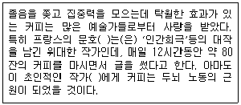
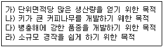
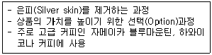
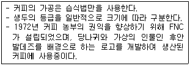
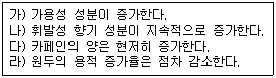
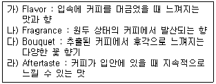
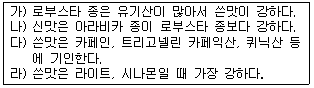
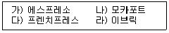
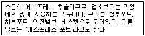
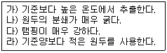

바리스타-2급 (2008-11-15 기출문제)
1과목: 커피학 개론
1. 다음은 커피 발전과정에 관한 내용들이다. 이 중 사실과 다른 것은?
- 커피 문화가 급속도로 확산된 17세기부터 19세기에는 프랑스의 계몽 운동과 이탈리아 르네상스 운동이 싹튼 시기로서, 커피 하우스는 사회 여론을 모으고 여과하는 장소로서 적합했다.
- 네덜란드인이 커피나무를 자바와 서인도 섬에 재배를 시작한 시기는 12세기 말경이다.
- 18세기 말 경 미국은 영국 홍차 대신 커피 마시기를 독립 운동으로 권장했다.
- 한국의 최초 커피하우스는 손탁호텔 이다.
(정답률: 70%)

2. 원산지 에티오피아로부터 커피가 전파되어 최초로 경작을 시작한 나라는?
- 인도
- 예멘
- 네덜란드
- 인도네시아
(정답률: 72%)
3. 다음 괄호 안에 들어갈 인물은?

- 발자크
- 스탕달
- 바흐
- 베토벤
(정답률: 74%)
4. 다음 커피나무에 관한 내용 가운데 옳은 내용은?
- 체리는 익어감에 따라 빨간색이나 노란색에서 초록색으로 변해 간다.
- 커피나무에 꽃이 피었다가 지고 열매가 맺히기 시작하면, 이로부터 6 - 8주 지나야 수확이 가능하다.
- 아라비카 종 커피는 일 년 내내 온도 차이가 크지 않은 고지대에 재배하기 때문에 꽃 피는 시기가 일정하다.
- 커피나무는 열매를 맺기 시작하면 5년 정도 지나야 수확이 안정되며, 경제성 있게 수확할 수 있는 기간은 20 - 30년이라고 보아야 된다.
(정답률: 77%)
5. 체리 속 생두는 보통 두 개가 서로 마주보고 있다. 이 경우 서로 마주보는 방향은 평평한데 이런 형태의 생두를 무엇이라 하는가?
- 피베리(Peaberry)
- 커플 빈(couple bean)
- 플랫 빈(Flat bean)
- 홀 빈(Whole bean)
(정답률: 75%)
6. 커피에 관련된 용어의 설명 중 부적합한 것은?
- Flavor는 커피를 마신 다음, 혀에 남아있는 커피의 류 성분으로부터 생긴 증 기로부터 느끼는 향기이다.
- 2)커피열매구조의 명칭은 외피-Outer Skin, 과육 ulp, 내과피 -Parchment, 은피 -Silver skin, 생두 ean이다.
- Demitasse는 에스프레소 용 잔으로 30~50ml정도의 커피를 담을 수 있다.
- Mocha라는 명칭은 예멘에서 생산되는 커피나 초콜릿이 들어간 음료에 이용된다.
(정답률: 41%)
7. 다음 중 아라비카종에 대한 설명으로 부적합한 것은?
- 원산지는 에티오피아(Ethiopia)로, 1753년 스웨덴 식물학자 칼 폰 린네(Carl von Linné)에 의해 처음으로 학계에 등록되었다.
- 가장 많이 알려진 품종으로 티피카(Typica)와 버번(Bourbon)이 있으나, 커피재배가 확대되면서 카투라(Caturra), 문도 노보(Mundo Novo), 블루마운틴(Blue Mountain) 등 품종도 다양해졌다.
- “커피나무의 귀족”이라고도 불리며, 2쌍의 염색체를 갖고, 꽃이 핀 후 11개월 이후가 지나서야 커피체리가 빨갛게 익는다.
- 15-24℃의 기온에서 연평균 강우량1,500-2,000㎜의 지나치게 습하지 않은 규칙적인 비와 직사광선은 아니지만 충분한 햇볕을 받아야한다.
(정답률: 67%)
8. 아라비카 원종에 가장 가까운 품종으로 콩의 모양이 긴 편이며 좋은 향과 신맛을 가지고 있으며 그늘 경작법(Shading)이 필요하며 생산성이 낮은 품종은?
- 티피카(Typica)
- 카투라(Caturra)
- 문도노보(Mundo-Novo)
- 켄트(Kent)
(정답률: 77%)
9. 커피 생두를 장기 저장하였을 때 콩의 색, 풍미 및 지질의 산가가 변화된다. 이들 현상에 대한 설명 중 틀린 것은?
- 커피 생두에 함유된 지질의 산가는 증가한다.
- 커피 생두의 색은 녹청색에서 갈색으로 변화된다.
- 커피 생두의 산가의 변화는 단백질의 가수분해 때문이다.
- 커피 생두의 색, 풍미 및 산가의 변화는 저장 조건과 밀접하다.
(정답률: 39%)
10. 건식법(Dry processing)으로 생산된 생두를 창고를 열어 계절풍을 쐬어서 가공한 커피로 신맛이 적고 입에서의 느낌이 묵직하고 독특한 향을 느낄 수 있는 인도산 커피는?
- Aged Coffee
- Old Coffee
- Organic Coffee
- Monsooned Coffee
(정답률: 84%)
11. 풍미가 가득한 양질의 커피를 마시기 위하여 커피콩을 보관할 때, 가루로 만들기 보다는 콩 상태로 보관하는 것이 좋다. 그 이유는 무엇일까?
- 원두상태로 보관하면 커피에 함유된 이산화탄소의 방출을 줄여서 커피 향미를 향상시킨다.
- 가루상태의 커피는 표면적 확대로 인해 산화가 촉진되며 각종 휘발성분의 손실을 초래한다.
- 원두상태로 보관하면 커피에 함유된 영양성분들이 축합반응을 일으켜 커피의 영양을 상승시킨다.
- 가루상태의 커피는 함유된 열량 영양소와 무기질의 분해를 초래함으로써 커피의 영양을 감소시킨다.
(정답률: 76%)
12. 커피재배조건에 대한 설명 중 틀린 것은?
- 유기질이 풍부한 화산성 토양이 적당하다.
- 배수가 잘되는 지역이 적합하다.
- 지역에 관계없이 표고가 높을수록 재배 적지이다.
- 수확 시점에선 건조한 기후가 필요하다.
(정답률: 77%)
13. 특정 생두에 ‘셰이드 그로운 커피(Shade-grown coffee)라는 명칭이 붙게 되는데 그 의미는 무엇인가?
- 작은 커피 묘목의 일조량 조절을 목적으로 그늘 막을 설치하였다.
- 커피종자 씨앗을 삼베포, 짚 등으로 덮어 그늘을 유지하였다.
- 커피나무의 개량 및 다수확을 목적으로 일정기간 그늘 막을 설치하였다.
- 커피나무의 일조시간을 줄이기 위해 키 큰 나무들의 그늘아래에서 경작되었다.
(정답률: 79%)
14. 커피종자를 개량하는 목적으로 옳은 것으로 묶은 것은?

- 가,나
- 나,다
- 다,라
- 가,다
(정답률: 76%)
15. 커피 체리를 수확하는 방법 중 틀린 설명은?
- 스트리핑(Stripping) 방식은 핸드 피킹(Hand-picking)방식에 비해 인건비 부담이 적다.
- 핸드 피킹(Hand-picking)방식은 커피의 품질(Quality)을 떨어뜨린다.
- 스트리핑(Stripping) 방식은 한 번에 모든 체리를 흝어 수확하는 방법이다.
- 핸드 피킹(Hand-picking)방식은 잘 익은 체리만을 선택적으로 수확하는 방식이다.
(정답률: 80%)
16. 생두 가공법 중에 건식법(Dry processing)에 대한 설명으로 옳은 것은?
- 습식법에 비해 좋은 품질의 커피를 생산할 수 있다.
- 수확한 체리를 그대로 건조시킨 후, 건조된 체리로부터 생두를 분리한다.
- 수확한 커피 체리에서 생두를 분리하여 수분함량이 17 -18% 정도로 만든다.
- 덜 익은 커피 열매를 수확하여 저온에서 숙성한 후, 생두를 분리하여 건조 시킨다.
(정답률: 64%)
17. 워시드 커피(Washed coffee)의 처리방법으로 옳은 것은?
- Pulping→Fermentation→Washing→Drying→Hulling→Cleaning→Grading
- Pulping→Fermentation→Washing→Hulling→Drying→Grading→Cleaning
- Pulping→Fermentation→Drying→Washing→Hulling→Cleaning→Grading
- Pulping→Hulling→Drying→Fermentation→Washing→Grading→Cleaning
(정답률: 47%)
18. 커피제조에 필요한 재료를 보관하는 냉동․냉장고의 관리 및 사용에 대한 설명 중 틀린 것은?
- 냉장고, 냉동고의 온도를 주기적으로 측정한 후 기록한다.
- 교차오염 예방을 위해 식품을 분리 보관한다.
- 냉장고, 냉동고는 내부 용적의 90% 이하로 식품을 보관한다.
- 주 1회 이상 청소와 소독을 한다.
(정답률: 69%)
19. 커피 가동 과정에 대한 아래 설명에 해당되는 것은?

- Hulling과정
- Polishing 과정
- Pulping 과정
- Grading 과정
(정답률: 57%)
20. 생두의 구입 시 포장에 명시된 상품명인 〔Brazil Santos NO.2 - Screen 19 - Strictly soft〕에서 NO.2의 의미는?
- 결점두의 혼입량
- 생두의 형태에 의한 분류
- 투명도의 정도에 의한 분류
- 생두의 크기에 의한 분류
(정답률: 50%)
21. 커피에 함유된 카페인의 역할이 아닌 것은?
- 중추신경계의 자극을 통한 각성효과
- 신장의 혈액량 증가에 의한 이뇨효과
- 피로회복 효과
- 위액분비 저하효과
(정답률: 74%)
22. 커피의 향미를 평가하는 순서로 가장 적당한 것은?
- 색깔, 촉감, 맛
- 향기, 맛, 촉감
- 맛, 향기, 촉감
- 촉감, 맛, 향기
(정답률: 82%)
23. 다음중 커피 이름과 생산지가 올바르게 연결된 것은?
- 에티오피아 - 시다모(Sidamo)
- 케냐 - 킬리만자로(Kilimanjaro)
- 콜롬비아 - 만델링(Mandhelling)
- 코스타리카 - 산토스(Santos)
(정답률: 50%)
24. 다음 설명에 해당되는 커피산지는?

- 온두라스
- 코스타리카
- 과테말라
- 콜롬비아
(정답률: 55%)
25. 다음 중 커피가 생산되지 않는 나라는?
- 태국
- 중국
- 터키
- 짐바브웨
(정답률: 49%)
26. 커피 생두의 평가 기준 중 틀린 것은?
- 결점수가 적은 커피가 좋은 커피이다.
- 일반적으로 뉴크롭(New crop)일수록 우수하게 평가된다.
- 커피콩의 크기만 크면 품질이 우수하다고 평가된다.
- 일반적으로 고지대에서 생산된 커피가 저지대에서 생산된 커피보다 우수하다.
(정답률: 77%)
27. 커피 제조과정에서 디 카페인(Decaffeinated coffee) 공정 중에서 물 추출법이 가장 많이 사용되고 있다. 이 공정의 장점이 아닌 것은?
- 추출속도가 빠르기 때문에 회수 카페인의 순도가 높다.
- 유기용매가 직접 생콩에 접촉하지 않기 때문에 안전하다.
- 수증기 증류에 의하여 용매를 제거할 필요가 없기 때문에 경제적이다.
- 카페인의 선택적 추출이 가능하나 설비에 따른 비용이 많이 드는 단점이 있다.
(정답률: 52%)
28. 위해요인분석 중점관리(HACCP) 제도란?
- 식품가공업체의 기기 세척에 관한 규칙이다.
- 물리적, 화학적, 생물 및 각종 오염에 대한 자율관리 체제이다.
- WTO 체제에 따른 국제적인 위생관리체제이다.
- 미국 FDA 규정에 따른 미생물 오염에 대한 위생관리 체제이다.
(정답률: 40%)
29. 우유를 희게 보이게 하는 우유 중의 성분은?
- 카제인미셀
- 유청단백질
- 무기질
- 비타민
(정답률: 50%)
30. 우유에 들어있는 칼슘의 흡수를 촉진하는 우유 중의 성분은?
- 불포화지방산
- 무기질
- 포화지방산
- 유당
(정답률: 43%)
2과목: 로스팅과 향미 평가(커피 배전)
31. 생두를 로스팅 하면 가장 많이 소멸되는 성분은?
- 단백질
- 수분
- 카페인
- 지방
(정답률: 81%)
32. 커피를 로스팅할 때 일어나는 변화 중 틀린 것은?

- 가,나
- 가,다
- 다,라
- 나,다
(정답률: 48%)
33. 로스팅 후 원두의 물리적 변화에 대한 설명 중 옳은 것은?
- 명도값의 증가
- 부피의 증가
- 수분 함량의 증가
- 압축 강도의 증가
(정답률: 50%)
34. 로스팅 단계를 달리한 원두 중에서 L값(명도)이 가장 높은 단계부터 순서대로 올바르게 배열된 것은?
- 미디엄로스트 > 라이트로스트 > 풀시티로스트 > 프렌치로스트
- 라이트로스트 > 미디엄로스트 > 풀시티로스트 > 프렌치로스트
- 풀시티로스트 > 라이트로스트 > 미디엄로스트 > 프렌치로스트
- 라이트로스트 > 풀시티로스트 > 미디엄로스트 > 프렌치로스트
(정답률: 65%)
35. 다음은 로스팅에 관한 내용이다. 바르게 설명된 것은?
- 생두의 탄수화물, 지방, 단백질, 유기산 등은 화학반응을 일으켜 커피의 맛과 향기 성분으로 변화된다.
- 생두가 열을 계속 흡수하면 조직이 수축하고 색상은 푸른색으로 변한다.
- 프렌치 로스트는 원두가 계피 색을 띄며 신맛이 뛰어나다.
- 일반적으로 맛에 힘을 주는 강한 커피를 원하면 약하게 로스팅을 하고, 맛의 미묘한 변화와 감미로운 향미의 조합을 원한다면 강하게 로스팅한다.
(정답률: 77%)
36. 커피의 로스팅은 온도와 시간에 따라 저온장시간 로스팅과 고온단시간 로스팅으로 분류될 수 있다. 다음 중 이 두가지 로스팅의 비교 설명으로 옳은 것은?
- 저온-장시간 로스팅은 팽창이 크고 밀도가 작은 반면, 고온-단시간 로스팅은 팽창이 적어 밀도가 크다.
- 저온-장시간 로스팅시 1잔당 커피사용량은 10-20% 덜 쓰게되어 경제적이다.
- 저온-장시간 로스팅은 고온-단시간 로스팅보다 수용성 성분이 적어진다.
- 고온-단시간 로스팅의 볶는 온도는 200℃가 좋다.
(정답률: 42%)
37. 댐퍼(Damper) 역할과 관계없는 것은?
- 은피를 배출하는 역할
- 드럼내부의 열량을 조절 하는 역할
- 드럼내부의 공기 흐름을 조절 하는 역할
- 흡열과 발열 반응을 조절하는 역할
(정답률: 61%)
38. 커피의 다음 성분들 가운데, 마시기 전 커피의 향을 느끼게 하는 성분은?
- 비 휘발성 액체 상태의 유기 성분
- 지질 같은 비 용해성 액체와 수용성 고체 물질
- 케톤(Ketone)이나 알데히드(Aldehyde) 계통의 휘발성분
- 에스테르(Ester)화합물
(정답률: 56%)
39. 로스팅공장에서 커피생두의 ‘로스팅 후 블렌딩(Blending after Roasting)'하는 방법의 특징을 틀리게 설명한 것은?
- 각각의 생두를 따로 로스팅을 하고 난 후 블렌딩하는 방법이다.
- 로스팅 횟수가 많아 작업이 번거롭다.
- 각각의 생두가 수확연도, 밀도 등에서 차이가 없는 경우 적합하다.
- 블렌딩 비율에 준하여 계획적인 로스팅을 하지 않으면 특정 원두만이 남게 되어 경제성에 문제점이 있다.
(정답률: 58%)
40. 다음 커피의 색상과 관련이 없는 성분은?
- 캐러멜
- 카페인
- 타닌
- 멜라노이딘
(정답률: 65%)
41. 커피의 평가 용어 중 옳은 설명은?

- 가,나
- 가,라
- 나,다
- 다,라
(정답률: 45%)
42. 커피생두에 함유된 유리아미노산에 대하여 잘못 설명한 것은?
- 커피생콩에 함유된 유리아미노산은 로스팅 과정 중 거의 변화되지 않는다.
- 로부스타 종은 미숙 콩에 비하여 완숙 콩에 함량이 많다.
- 아라비카 종은 미숙 콩과 완숙 콩의 함량이 비슷하다.
- 커피생두의 함량은 약 0.3~0.8%로서 원두 향기의 형성에 중요한 성분이다.
(정답률: 50%)
43. 다음은 바디(Body)에 관한 내용이다. 바르게 설명된 것을 고르시오.
- 커피의 산도(Acidity)를 나타내는 용어로 산도가 높은 커피일수록 바디가 강하다.
- 향기를 나타내는 용어로 약배전 한 커피에서 더욱 강하게 느낄 수 있다.
- 커피를 마신 다음 혀에 남아있는 커피의 향기를 말한다.
- 입 안에서 느껴지는 촉감과 관련이 깊은 용어로 커피의 지방 성분에 의해 느껴진다.
(정답률: 64%)
44. 커피 생두의 30%정도 차지하며 로스팅 시 커피 특유의 갈색으로 변하게 하고 향기와 감칠맛을 증대시키는 역할을 하는 성분은?
- 섬유질
- 회분
- 당분
- 카페인
(정답률: 59%)
45. 다음 로스팅 중 맛 성분의 변화에 대한 설명 중 옳은 것은?

- 가,나
- 가,라
- 나,다
- 다,라
(정답률: 63%)
3과목: 커피 추출
46. 커피추출의 정의를 정확히 설명한 것은?
- 커피의 모든 성분을 최대한 많이 뽑아내는 것.
- 잡미를 포함하지 않은 양질의 성분만을 골라내는 것.
- 적은 양의 커피가루로 많은 양의 커피를 뽑아내는 것.
- 많은 양의 커피가루를 사용하여 소량의 잔액만을 뽑아내는 것.
(정답률: 72%)
47. 다음은 커피를 추출하는 물에 대한 내용이다. 바르게 설명된 것은?
- 물에 녹아 있는 철이나 동 같은 금속 성분은 커피의 맛을 한층 풍부하게 해준다.
- 카페에서 수돗물을 추출기에 직접 연결하여 쓸 때는 반드시 중간에 정수 장치를 연결하여 염소, 유기물, 칼슘 등을 제거한다.
- 칼슘염은 유기산과 결합하여 커피의 단맛을 더해준다.
- 경도가 높은 물에 녹아 있는 칼슘염, 수돗물에 소독제로 들어 있는 염소는 커피의 성분과 반응하여 맛과 향기를 한층 더해준다.
(정답률: 71%)
48. 커피 추출기구중 일반적으로 분쇄된 원두의 입자가 작은 순서대로 나열하면?

- 가-나-다-라
- 라-나-가-다
- 가-라-나-다
- 라-가-나-다
(정답률: 54%)
49. 커피원두의 가치를 최대한 살리기 위한 분쇄방법이 아닌 것은?
- 커피 미분이 많이 발생되지 않도록 한다.
- 커피 추출방법에 따른 적합한 분쇄입도를 선택한다.
- 분쇄할 때 되도록 그라인더(Grinder)에 의한 마찰열 발생을 최대화 한다.
- 그라인더(Grinder)의 기계적 정비와 관리를 통하여 커피입자의 일정한 분쇄도를 유지한다.
(정답률: 74%)
50. 추출이 용이하게 적당량의 분쇄된 커피를 필터 홀더에 담는 일련의 과정을 팩킹(Packing)이라 하는데 이 과정과 관련이 없는 것은?
- Infusion
- Dosing
- Tapping
- Tamping
(정답률: 62%)
51. 에스프레소 추출시 추출시간이 50초 이상 걸렸다. 이를 개선하는 방법 중 맞는 것은?
- 커피의 분쇄를 조금 가늘게 조정 한다.
- 추출 시 탬핑(Tamping)압력을 강하게 한다.
- 모터펌프의 추출압력을 높인다.
- 사용 원두의 양을 조금 늘린다.
(정답률: 50%)
52. 원두의 품위 유지를 위한 포장기술이 아닌 것은?
- 진공 포장
- 탈취형 포장
- 가스치환 포장
- 가스흡수제의 이용
(정답률: 50%)
53. 페이퍼 드립퍼에 있는 리브의 역할을 바르게 설명한 것은?
- 접촉면을 높여 물이 빠지는 시간을 길게 하는 역할을 한다.
- 커피가루와 드립퍼 사이에 있는 공기를 원활히 배출시키는 역할을 한다.
- 드립퍼의 내구성을 높이는 역할을 한다.
- 리브가 많을수록 유속이 느려져 보다 진한 커피를 뽑을 수 있다.
(정답률: 65%)
54. 다음 설명하는 추출 기구는?

- 모카 포트
- 프렌치 프레스
- 이브릭
- 페콜레이터
(정답률: 63%)
55. 핸드드립으로 커피를 추출할 때 커피가루에는 여러 가지 힘이 작용한다. 이것들은 적당히 조절하여야 양질의 커피를 얻을 수 있다. 이렇게 추출할 때 커피가루에 작용하는 힘이 아닌 것은?
- 표면장력
- 중력
- 탄산가스에 의한 가루의 팽창력
- 원심력
(정답률: 56%)
56. 다음중 에스프레소 평가 기준으로 옳은 것은?
- 적절한 커피의 양, 크레마의 두께와 지속성, 크레마의 색깔, 향기의 질과 강약, 맛의 균형감
- 적절한 커피의 양, 전체의 1/3 이상의 크레마, 크레마의 색깔, 향기의 질과 강약, 맛의 강렬함
- 적절한 커피의 양, 전체의 1/3 이상의 크레마, 크레마의 색깔, 톡 쏘는 강한 향기, 맛의 균형감
- 적절한 커피의 양, 크레마의 두께와 지속성, 크레마의 색깔, 향기의 질과 강약, 맛의 강렬함
(정답률: 69%)
57. 에스프레소커피 제조시 과소추출(Under extraction)의 원인으로 연결된 것은?

- 가,나
- 가,다
- 나,다
- 나,라
(정답률: 59%)
58. 머신을 이용하여 우유 거품(Foamed milk)을 만드는 방법이다. 틀린 것은?
- 차가운 우유를 사용하는 것이 좋다.
- 우유의 온도가 너무 올라가지 않도록 주의한다.
- 스팀노즐을 깊게 담가 공기의 유입을 차단한다.
- 거품이 형성되면 노즐을 피처 벽 쪽으로 이동시켜 혼합한다.
(정답률: 74%)
59. 에스프레소 머신의 스팀을 틀 때 스팀에 물이 많이 나오는 현상의 이유는?
- 기압이 너무 높을 때
- 스팀의 노즐이 막혔을 때
- 보일러 안의 물이 80% 이상 차 있을 때
- 보일러의 물이 너무 뜨거울 때
(정답률: 63%)
60. 다음은 에스프레소 머신을 구성하고 있는 요소들의 명칭과 설명이다. 바르게 설명된 것을 고르시오.
- 포타필터(Portafilter)-추출할 때 고온•고압의 물이 새지 않도록 차단하는 역할을 하며, 보통 ‘패킹(Packing)’이라 부른다.
- 압력 게이지(Pressure Gauge)-보일러에 물이 얼마나 들어있는가를 표시하는 눈금으로, 보통 투명관으로 만들어져 있다.
- 샤워필터(Shower filter)-포터 필터에 전체적으로 골고루 물을 분사시키는 역할을 한다.
- 워터 레벨 게이지(Water Level Gauge)-원통형 모양의 저장장치로 물과 스팀을 에스프레소에 필요한 적절한 온도로 가열하고 저장하는 역할을 한다.
(정답률: 65%)